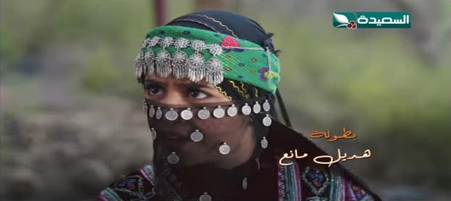

أطياف
حوارات

في حوار شيق لـ"أطياف" هديل مانع: المجتمع اليمني مشكلة لأي فنان وزواجي المبكر كان عائقا أمام طموحاتي الفنية
انطلاقتي الأولى في عالم التمثيل كانت من الإذاعة المدرسية، التحقت بكلية الإعلام لكني لم أكمل تعليمي فيها لظروف شخصية، للأسف المجتمع اليمني لا يستطيع الفصل بين الحياة الشخصية وبين العمل الفني ، بهذه الجمل عبرت هديل مانع عن مسيرة حياتها الفنية بكل ثقة ووضوح وعن جوانب هامة في حياتها الشخصية والفنية
اقرأ المزيد
الكابتن علي النونو لـ"أطياف" "وزير الرياضة ليس رياضيا ومن يعملون في الرياضة ليس لهم علاقة بها"
للنونو العديد من التجارب الاحترافية الداخلية والخارجية، فهو ثاني لاعب يمني يحترف في الدوري المصري مع النادي المصري بعد علي محسن المريسي، تنقل بعدها بين العديد من الأندية العربية كالمريخ السوداني، والبسيتين البحريني، وتشرين السوري، إلا أنه خطف الأنظار وتألق مع نادي المريخ السوداني. تستضيف "أطياف" في هذا الحوار أسطورة الكرة اليمنية "علي النونو" حول رؤيته في تطوير المنتخب اليمني، ورأيه في بعض الشؤون الرياضية.
اقرأ المزيد